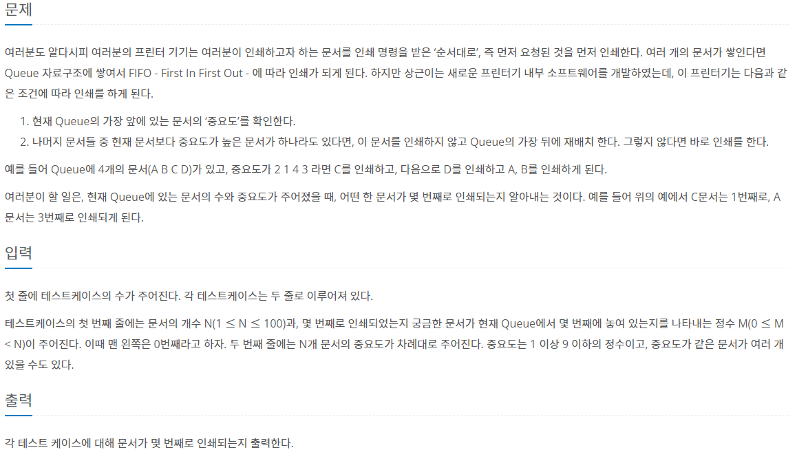
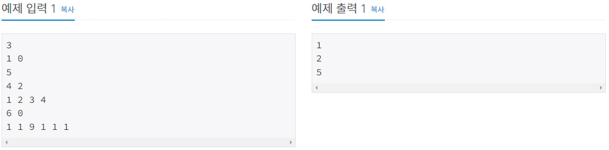
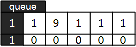
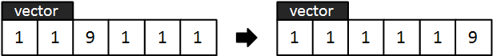
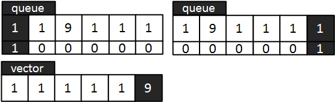
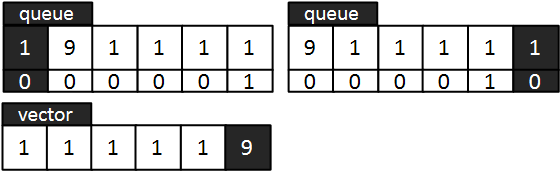
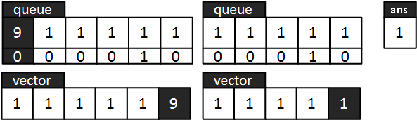
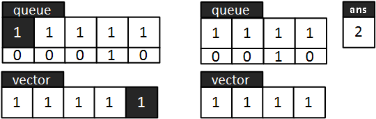
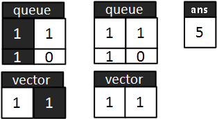
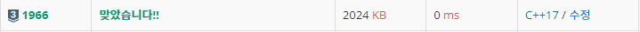

#INFO
난이도 : SIVLER3
알고리즘 유형 : DataStructure_QUEUE
출처 : 1966번: 프린터 큐 (acmicpc.net)
1966번: 프린터 큐
여러분도 알다시피 여러분의 프린터 기기는 여러분이 인쇄하고자 하는 문서를 인쇄 명령을 받은 ‘순서대로’, 즉 먼저 요청된 것을 먼저 인쇄한다. 여러 개의 문서가 쌓인다면 Queue 자료구조에
www.acmicpc.net
 
#SOVLE
pair 와 queue 의 사용법을 연습할 수 있도록 해준 좋은 문제였습니다. 3번째 테스트 케이스 [6 , 0] [1 , 1 , 9 , 1 , 1 , 1] 를 예시로 풀이 하도록 하겠습니다.
우선 queue와 pair를 이용해 각 중요도를 구별하기 위해서, 인덱스를 붙여 주었습니다. 만약 인덱스가 찾고자 하는 인덱스(M)와 동일하다면, pair.second()에 1을 찾고자 하는 인덱스가 아니라면 pair.second()에 0을 대입합니다.
vector<int> v;
queue<pair<int,int>> q;
int cnt = 0;
cin >> N >> M;
for (int i = 0 ; i < N ; i++) {
int tmp;
cin >> tmp;
v.push_back(tmp);
if (i == M) { q.push({x, 1}); }
else { q.push({x, 0}); }
}
벡터에 들어있는 중요도값을 오름차 순으로 정렬합니다.
// 중요도 순으로 오름차 정렬
sort(v.begin(), v.end());
다음으로 vector와 queue를 비교해 케이스에 따라 if 분기문을 수행합니다.
case1. 본인 순서이고, 찾고자 하는 인덱스(M)인 경우
case2. 본인 순서이지만, 찾고자 하는 인덱스(M)가 아닌 경우
case3. 본인 순서가 아닌경우
*1 queue.front() 의 값과 vector.back() 값을 비교합니다. 중요도가 9보다 낮기에 본인 순서가 아니므로 뒤로 보내줍니다. (case3)

*2 마찬가지로 본인 순서가 아니므로 뒤로 보내줍니다. (case3)

*3 본인 순서이지만, 찾고자 하는 인덱스(M..1)이 아니므로 queue에서 pop() 해주고 vector 에서도 pop_back() 해줍니다. 다음으로 연산횟수(ans)를 1 증가시킵니다. (case2)

*4 마찬가지로 본인 순서이지만, 찾고자 하는 인덱스가 아니므로 case2 과정을 수행합니다.

*5 (앞의 두 개 인덱스는 case2 이므로 생략했습니다.) 본인 순서이고, 찾고자 하는 인덱스(queue.second()==1) 이기에 연산횟수(ans)를 1 증가시킨 후 반복문에서 break 합니다. (case1)

int ans = 0;
while(true){
// 본인 순서 O
if (v.back() == q.front().first) {
// 본인 순서 O 인덱스 O
if (q.front().second == 1) {
ans++;
break;
}
// 본인 순서 O 인덱스 X
else {
v.pop_back();
q.pop();
ans++;
}
}
// 본인 순서 X
else {
q.push({q.front().first, q.front().second});
q.pop();
}
}
마지막으로 ans값을 출력해 주면 됩니다.
cout << ans << endl;#CODE
#include <iostream>
#include <algorithm>
#include <vector>
#include <queue>
using namespace std;
int main(int argc, char* argv[]){
int testCase, N, M;
cin >> testCase;
while(testCase--){
vector<int> v;
queue<pair<int,int>> q;
cin >> N >> M;
for (int i = 0 ; i < N ; i++) {
int tmp;
cin >> tmp;
v.push_back(tmp);
if (i == M) { q.push({tmp, 1}); } // check
else { q.push({tmp, 0}); }
}
// 중요도 순으로 오름차 정렬
sort(v.begin(), v.end());
int ans = 0;
while(true){
// 본인 순서 O
if (v.back() == q.front().first) {
// 본인 순서 O 인덱스 O
if (q.front().second == 1) {
ans++;
break;
}
// 본인 순서 O 인덱스 X
else {
v.pop_back();
q.pop();
ans++;
}
}
// 본인 순서 X
else {
q.push({q.front().first, q.front().second});
q.pop();
}
}
cout << ans << endl;
}
return 0;
}